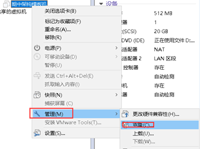

第1章 企业架构规划
1.1 架构图

1.1.1 用户访问网站组成
|
类型 |
作用 |
实现方式 |
|
顾客-用户 |
访问网站的人员 |
@ |
|
保安-防火墙 |
安全策略控制；正确的流量通过，攻击者的流量组织 |
硬件- 华为 思科 juniper厂商 软件-iptables |
|
迎宾-负载均衡服务器 |
提供访问者请求调度作用 |
nginx反向代理负载均衡服务器 LVS haproxy |
|
服务员-web服务器 |
根据http原理，回复给访问者相应的页面信息 |
nginx网站服务技术 apache tomcat |
|
厨师-数据库服务器 |
返回给web服务器，相应用户数据的信息（字符串信息） |
mysql oracle |
|
厨师-存储服务器 |
返回给web服务器，相应用户的视频、图片、附件等数据信息 |
NFS存储服务器 分布式储存mfs fastdfs |
|
厨师-备份服务器 |
备份全网架构服务器的重要资料 |
定时备份rsync+定时任务 实时备份 inotify/sersync+rsync |
|
厨师-缓存服务器 |
将数据存储到内存当中，提升读取效率 |
memcache redis mongodb |
|
心跳线 |
keepalived 高可用 |
|
|
集群 |
多台服务器做一件相同的事情 |
|
1.1.2 运维人员访问网站组成
|
类型 |
作用 |
实现方式 |
|
秘密通道-vpn |
实现加密传输数据，实现认证建立连接 |
|
|
监管-跳板机 |
监控运维人员操作信息 1、实时监控运维人员桌面信息 2、命令记录功能 3、操作记录回放 4、用户审计功能 |
jumpsever/gateone |
|
批量管理服务器 |
批量自动化管理多台主机 |
ssh+key ansible （200-300台） saltstack |
|
监控服务器 |
监控架构服务器运行情况 |
zabbix/nagios+cacti |
|
批量安装部署系统 |
（kicksrtart/cobbler） |
|
1.2 架构搭建顺序
|
顺序 |
服务 |
软件 |
|
1 |
备份存储服务器 |
rsync软件实现备份服务 |
|
2 |
存储服务器 |
NFS软件实现存储服务 |
|
3 |
1 2 之间实时同步 |
inotify+rsync/sersync |
|
4 |
批量管理服务器 |
ssh+key/ansible/saltstack |
|
5 |
web服务 |
nginx |
|
6 |
LNMP架构 |
linux+nginx+mysql+php |
|
7 |
负载均衡 |
ngnix负载均衡 |
|
8 |
心跳线 |
keeplived 高可用 |
1.3 架构环境
1.3.1 主机环境
|
服务器规划 |
数量 |
作用说明 |
|
负载均衡服务器 |
两台 |
对访问网站的流量进行风流，减少流量对某台服务器的压力 |
|
web服务器 |
三台 |
处理用户的页面访问请求(Nginx) |
|
NFS存储（兼职批量管理） |
一台 |
储存图片、附件、头像等静态数据 |
|
备份服务器（rsync） |
一台 |
对全网服务器数据进行实时与定时备份 |
|
数据库服务器（mySQL） |
一台 |
对动态变化数据进行存储（文本内容） |
|
管理服务器 |
一台 |
1) 1.作为yum仓库服务器，提供全网服务器的软件下载 2) 2.跳板机、操作审计 3) 3.vpn(pptp) 4) 4.监控(zabbix) 5) 5.兼职批量分发和管理（ssh+key/ansible/saltstack） |
|
合计需要9台虚拟机 |
||
1.3.2 各主机（IP/主机名）规划
|
服务器说明 |
外网ip（nat） |
内网IP（LAN区段） |
主机名称规划 |
|
A1-nginx负载均衡服务器01 |
10.0.0.5/24 |
172.16.1.5/24 |
lb01 |
|
A2-nginx负载均衡服务器02 |
10.0.0.6/24 |
172.16.1.6/24 |
lb02 |
|
B1-nginx web服务器 |
10.0.0.7/24 |
172.16.1.7/24 |
web02 |
|
B2-nginx web服务器 |
10.0.0.8/24 |
172.16.1.8/24 |
web01 |
|
B3-nginx web服务器 |
10.0.0.9/24 |
172.16.1.924 |
web03 |
|
C3-mysql数据库服务器 |
10.0.0.51/24 (生产环境不设置) |
172.16.1.51/24 |
db01 |
|
C1-NFS存储服务器 |
10.0.0.31/24 (生产环境不设置) |
172.16.1.31/24 |
nfs01 |
|
C2-rsync 存储服务器 |
10.0.0.41/24 (生产环境不设置) |
172.16.1.41/24 |
backup |
|
X-管理服务器 |
10.0.0.61/24 (生产环境不设置) |
172.16.1.61/24 |
m01 |
1.3.3 初始目录规划
|
说明 |
目录结构 |
目录结构说明 |
|
初始化目录 |
/server/scripts /server/tools /application |
存放脚本的目录 存放编译安装软件源代码的目录 软件程序的安装目录 |
1.4 虚拟主机配置
1.4.1 虚拟主机网卡添加（vmware软件）
选择网络适配器，添加一块新对的网卡
图1-1 添加网卡
选项默认即可，下一步直到网卡添加成功。
图1-2 添加完成
1.4.2 编辑网络
修改网络选项，将NAT模式子网改为 10.0.0.0 /24
修改网关为10.0.0.254
图1-3 修改NAT网络的网段
图1-4 修改NAT网络的网关
设置网卡的格式
第一块网卡选择nat模式
图1-5 第一块网卡设置
第二块网卡选择lan区段
图1-6 第二块网卡设置 LAN区段
配置好lan区段后选择上lan区段即可
图1-7 第二块网卡选择好LAN区段
1.4.3 虚拟主机网卡地址配置
图1-8 第一块网卡eth0配置
图1-9 第二块网卡eth1配置
1.4.4 网卡配置好后注意
配置完成需要重启网络服务
/etc/init.d/network restart
第2章 架构主机优化脚本
注意：此脚本需要放在/tmp 目录下
#!/bin/bash ################################################# # File Name: optimize-init_sys.sh # Author: Energy # Mail: [email protected] # Function: system optimize scripts ################################################# #optimization linux system . /etc/init.d/functions #change system directory: create seripts/software directory function change_dir(){ ShellDir="/server/scripts" SoftwareDir="/server/tools" mkdir -p $ShellDir &&\ mkdir -p $SoftwareDir } # input info verify function info_verify(){ read -p "Please make sure the information you entered (yes|no): " info case "$info" in y*|Y*) continue ;; n*|N*) exit 1 ;; esac } #change system hostname function change_hostname(){ read -p "Please input hostname: " HostName info_verify hostname $HostName &&\ sed -i "2s/=.*$/=$HostName/g" /etc/sysconfig/network &&\ chk_hosts=$(grep -o "\b$HostName\b" /etc/hosts) get_ip=$(ifconfig eth0|awk -F "[ :]+" 'NR==2 {print $4}') if [ -z $chk_hosts ] then echo "$get_ip $HostName" >>/etc/hosts else continue fi } #boot system optimize: setup chkconfig function change_chkconfig(){ Boot_options="$1" for boots in `chkconfig --list|grep "3:on"|awk '{print $1}'|grep -vE "$Boot_options"` do chkconfig $boots off done } #setup system optimize: setup ulimit function change_ulimit(){ grep "* - nofile 65535" /etc/security/limits.conf >/dev/null 2>&1 if [ $? -ne 0 ] then echo '* - nofile 65535' >>/etc/security/limits.conf fi } #setup system optimize: setup sysctl function change_sysctl(){ cat /tmp/sysctl.conf >/etc/sysctl.conf &&\ modprobe bridge &>/dev/null &&\ sysctl -p &>/dev/null } #sshd software optimize: change sshd_conf function change_sshdfile(){ SSH_Port="port 22" SSH_ListenAddress=$(ifconfig eth0|awk -F "[ :]+" 'NR==2 {print $4}') SSH_PermitRootLogin="PermitRootLogin no" SSH_PermitEmptyPassword="PermitEmptyPasswords no" SSH_GSSAPI="GSSAPIAuthentication no" SSH_DNS="useDNS no" #sed -i -e "13s/.*/$SSH_Port/g" /etc/ssh/sshd_config #sed -i -e "15s/.*/ListenAddress $SSH_ListenAddress/g" /etc/ssh/sshd_config #sed -i -e "42s/.*/$SSH_PermitRootLogin/g" /etc/ssh/sshd_config #sed -i -e "65s/.*/$SSH_PermitEmptyPassword/g" /etc/ssh/sshd_config sed -i -e "81s/.*/$SSH_GSSAPI/g" /etc/ssh/sshd_config sed -i -e "122s/.*/$SSH_DNS/g" /etc/ssh/sshd_config } #selinux software optimize: change disable function change_selinux(){ sed -i 's#SELINUX=.*#SELINUX=disabled#g' /etc/selinux/config &&\ setenforce 0 } #firewall software optimize: change stop function change_firewall(){ /etc/init.d/iptables stop >/dev/null 2>&1 } #crond software optimize: time synchronization function change_update(){ grep -i "#crond-id-001" /var/spool/cron/root >/dev/null 2>&1 if [ $? -ne 0 ] then echo '#crond-id-001:time sync by hq' >>/var/spool/cron/root echo "*/5 * * * * /usr/sbin/ntpdate time.nist.gov >/dev/null 2>&1">>/var/spool/cron/root fi } #update yum info function update_yum(){ wget -q -O /etc/yum.repos.d/CentOS-Base.repo http://mirrors.aliyun.com/repo/Centos-6.repo wget -q -O /etc/yum.repos.d/epel.repo http://mirrors.aliyun.com/repo/epel-6.repo } #change profile file info function change_profile(){ grep "PS1" /etc/profile >>/dev/null 2>&1 if [ $? -ne 0 ] then echo "PS1='\[\e[32;1m\][\[email protected]\h \W]\\$ \[\e[0m\]'" >>/etc/profile fi grep "alias grep" /etc/profile >>/dev/null 2>&1 if [ $? -ne 0 ] then echo "alias grep='grep --color=auto'" >>/etc/profile echo "alias ll='ls -l --color=auto --time-style=long-iso'" >>/etc/profile fi source /etc/profile } function main(){ change_dir change_hostname change_chkconfig "crond|network|rsyslog|sshd|sysstat" change_ulimit change_sysctl change_sshdfile change_selinux change_firewall change_update update_yum change_profile } main action "system optimize complete" /bin/true
2.1 架构优化脚本内容
适用于 #centos6.x 系统
2.1.1 更改yum源
mv /etc/yum.repos.d/CentOS-Base.repo /etc/yum.repos.d/CentOS-Base.repo.backup wget -O /etc/yum.repos.d/CentOS-Base.repo http://mirrors.aliyun.com/repo/Centos-6.repo wget -O /etc/yum.repos.d/epel.repo http://mirrors.aliyun.com/repo/epel-6.repo
2.1.2 关闭selinux
sed -i 's#SELINUX=enforcing#SELINUX=disabled#g' /etc/selinux/config grep SELINUX=disabled /etc/selinux/config setenforce 0 getenforce
2.1.3 关闭关防火墙
/etc/init.d/iptables stop /etc/init.d/iptables stop chkconfig iptables off
2.1.4 精简开机自启动服务
chkconfig |egrep -v "sshd|network|crond|rsyslog|sysstat"|awk '{print "chkconfig",$1,"off"}'|bash export LANG=en chkconfig --list|grep 3:on
2.1.5 提权oldboy可以sudo（可选）
useradd oldboy \cp /etc/sudoers /etc/sudoers.ori echo "oldboy ALL=(ALL) NOPASSWD: ALL" >>/etc/sudoers tail -1 /etc/sudoers visudo -c
2.1.6 中文字符集（不用做）
cp /etc/sysconfig/i18n /etc/sysconfig/i18n.ori echo 'LANG="zh_CN.UTF-8"' >/etc/sysconfig/i18n source /etc/sysconfig/i18n echo $LANG
2.1.7 时间同步
echo '#time sync by hzs at 2017-10-05' >>/var/spool/cron/root echo '*/5 * * * * /usr/sbin/ntpdate ntp1.aliyun.com >/dev/null 2>&1 '>>/var/spool/cron/root crontab -l
2.1.8 命令行安全（千万别做）
#echo 'export TMOUT=300' >>/etc/profile #echo 'export HISTSIZE=5' >>/etc/profile #echo 'export HISTFILESIZE=5' >>/etc/profile #tail -3 /etc/profile #./etc/profile
2.1.9 加大文件描述符
echo '* - nofile 65535 '>>/etc/security/limits.conf tail -1 /etc/security/limits.conf
2.1.10 内核优化
cat >>/etc/sysctl.conf<<EOF ##youhua net.ipv4.tcp_fin_timeout = 2 net.ipv4.tcp_tw_reuse = 1 net.ipv4.tcp_tw_recycle = 1 net.ipv4.tcp_syncookies = 1 net.ipv4.tcp_keepalive_time = 600 net.ipv4.ip_local_port_range = 4000 65000 net.ipv4.tcp_max_syn_backlog = 16384 net.ipv4.tcp_max_tw_buckets = 36000 net.ipv4.route.gc_timeout = 100 net.ipv4.tcp_syn_retries = 1 net.ipv4.tcp_synack_retries = 1 net.core.somaxconn = 16384 net.core.netdev_max_backlog = 16384 net.ipv4.tcp_max_syn_backlog = 16384 ##iptables youhua net.nf_conntrack_max = 25000000 net.netfilter.nf_conntrack_max = 25000000 net.netfilter.nf_conntrack_tcp_timeout_established = 180 net.netfilter.nf_conntrack_tcp_timeout_time_wait = 120 net.netfilter.nf_conntrack_tcp_timeout_close_wait = 60 net.netfilter.nf_conntrack_tcp_timeout_fin_wait = 120 EOF
#修改内核后让内核配置文件中的参数生效
sysctl -p
2.1.11 安装一些软件
yum install lrzsz namp tree dos2unix nc -y
2.1.12 系统升级操作（暂不使用）
#yum update 或 yum upgrade #yum -y update #升级所有包，改变软件设置和系统设置，系统版本内核都升级 #yum -y ipgrade #升级所有包，不改变系统设置和软件设置，系统版本升级，内核不变
2.2 模板机主机hosts文件配置
cat >/etc/hosts<<EOF 127.0.0.1 localhost localhost.localdomain localhost4 localhost4.localdomain4 ::1 localhost localhost.localdomain localhost6 localhost6.localdomain6 172.16.1.5 lb01 172.16.1.6 lb02 172.16.1.7 web02 172.16.1.8 web01 172.16.1.9 web03 172.16.1.51 db01 db01.etiantian.org 172.16.1.31 nfs01 172.16.1.41 backup 172.16.1.61 m01 EOF
第3章 虚拟机克隆
3.1 克隆前准备
一清空，两删除
清空网络配置文件
>/etc/udev/rules.d/70-persistent-net.rules
echo '>/etc/udev/rules.d/70-persistent-net.rules' >>/etc/rc.local
删除网卡配置文件中的uuid和HWADDR
sed -ri '/HWADDR|UUID/d' /etc/sysconfig/network-scripts/ifcfg-eth[01]
3.2 进行克隆
模板机关机
shutdown -h now
3.2.1 保留快照
3.3 进行克隆
3.3.1 进行克隆

3.3.2 创建连接克隆
3.4 克隆主机配置
01. 利用给的脚本进行修改
02. 手动进行修改
hostname backup sed -i "s#oldboy40#backup#g" /etc/sysconfig/network grep "backup" /etc/sysconfig/network HOSTNAME=backup grep "backup" /etc/hosts 172.16.1.41 backup
3.4.1 手动修改网卡地址
sed -i 's#200#41#g' /etc/sysconfig/network-scripts/ifcfg-eth[01]
3.4.2 修改系统主机名称
hostname backup sed -i 's#znix#backup#g' /etc/sysconfig/network 修改hosts文件
3.4.3 重启网卡生效
/etc/init.d/network restart
3.4.4 重新建立xsheel标签进行连接
第一台克隆主机完成
3.5 虚拟主机快照
模板机初始化完成进行拍照留念
存储空间足够，快照要多保存。，
3.6 错误排查
3.6.1 网卡配置问题
a 两删除操作完成之后，不要再进行setup修改网卡操作，否则mac地址信息会再次出现
b setup命令无法设置网卡信息，主要和字符集设置有关
3.7 如何让setup 命令中防火墙配置生效
3.7.1 CentOS系统找不到setup命令工具的解决方法
yum -y install setuptool #安装setup命令工具 yum -y install ntsysv #安装setup工具配套的系统服务组件 yum -y install system-config-securitylevel-tui #安装setup工具配套的防火墙配置组件 yum -y install system-config-network-tui #安装setup工具配套的网络配置组件 yum -y install authconfig-gtk #安装setup工具配套的验证配置组件 yum -y install system-config-keyboard #安装setup工具配套的键盘配置组件
3.7.2 使用setup配置中的Firewall configuration出现的错误
Traceback (most recent call last): File "/usr/bin/system-config-firewall-tui", line 29, inimport fw_tui File "/usr/share/system-config-firewall/fw_tui.py", line 34, in import fw_nm File "/usr/share/system-config-firewall/fw_nm.py", line 30, in bus = dbus.SystemBus() File "/usr/lib/python2.6/site-packages/dbus/_dbus.py", line 202, in __new__ private=private) File "/usr/lib/python2.6/site-packages/dbus/_dbus.py", line 108, in __new__ bus = BusConnection.__new__(subclass, bus_type, mainloop=mainloop) File "/usr/lib/python2.6/site-packages/dbus/bus.py", line 125, in __new__ bus = cls._new_for_bus(address_or_type, mainloop=mainloop) dbus.exceptions.DBusException: org.freedesktop.DBus.Error.FileNotFound: Failed to connect to socket /var/run/dbus/system_bus_socket: No such file or directory
3.7.3 解决办法
yum install -y system-config-firewall system-config-firewall-tui dbus eggdbus && service messagebus start